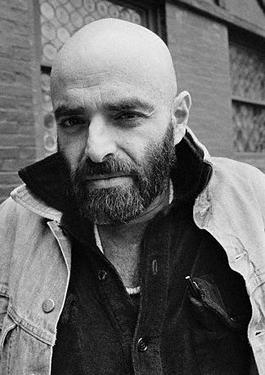

The Rose That Grew From Concrete
By Tupac Shakur

Did you hear about the rose that grew from a crack
in the concrete
Proving nature's laws wrong it learned 2 walk
without having feet
Funny it seems, but by keeping its dreams,
it learned 2 breathe fresh air
Long live the rose that grew from concrete
when no one else even cared!
Masks
By Shel Silverstein

She had blue skin,
And so did he.
He kept it hid
And so did she.
They searched for blue
their whole life through.
Then passed right by–
And never knew.
Nocturne
By Rosario Castellanos
Time is too long for life;
For knowledge not enough.
What have we come for, night, heart of night?
Dream that we do not die
And, at times, for a moment, wake.